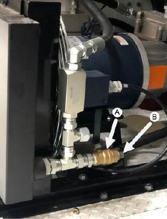
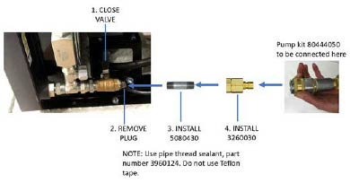
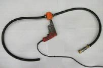
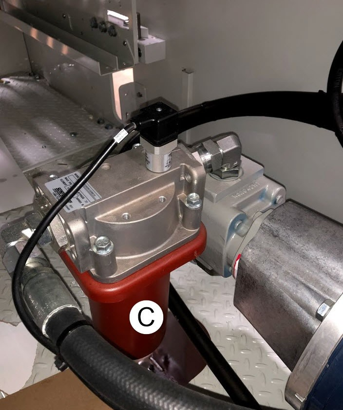
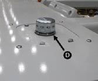

Cover Electric components in the enclosure as needed to avoid any fluid spill on to them
Used fluid should never be put back into knife.


If heat transfer fluids other than Paratherm NF are used in or added to the knife, no warranties will be recognized for motors, drives, cooling systems, or other related items.
If fluid has become contaminated by water or another foreign substance the above steps may have to be repeated several times to flush the system. Report any findings back to BW Papersystems field service as soon as possible.